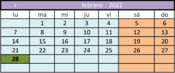

Goi maila

Ziklo honek industria-sistemetako prozesuak neurtzeko, erregulatzeko eta kontrolatzeko instalazio automatikoak muntatzeko eta mantentzeko proiektuak garatzeko eta kudeatzeko prestatzen zaitu, baita sistema horiek muntatzeko, mantentzeko eta martxan jartzeko lanak.
|  | ||